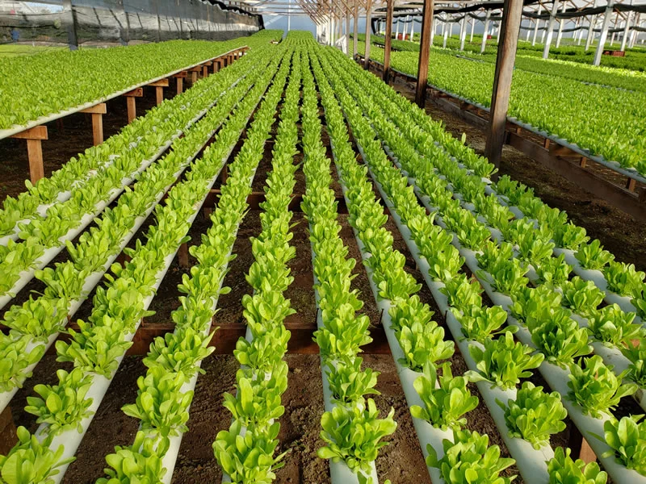

Descubra como cultivar alimentos frescos e saudáveis em casa, de forma sustentável e eficiente.
Comece a Cultivar Hoje!O que é Hidroponia?
Hidroponia é a arte de cultivar plantas sem solo, onde as raízes são imersas em uma solução nutritiva aquosa. Essa técnica inovadora permite um controle preciso sobre os nutrientes que as plantas recebem, resultando em um crescimento mais rápido e saudável, com menor consumo de água.

Vantagens da Hidroponia
💧 Economia de Água
Até 90% menos água que a agricultura tradicional, pois a água é reciclada no sistema.
📈 Maior Produtividade
Permite cultivar mais plantas em espaços menores e com ciclos de crescimento acelerados.
🛡️ Menos Pragas e Doenças
A ausência de solo reduz drasticamente a incidência de pragas e doenças transmitidas pelo solo.
✨ Qualidade Superior
Plantas mais limpas, saudáveis e com sabor aprimorado devido à nutrição otimizada.
Principais Sistemas Hidropônicos
NFT (Nutrient Film Technique)
Um fluxo contínuo e raso de solução nutritiva passa pelas raízes das plantas em canais.
No sistema NFT, as plantas são cultivadas em canais inclinados por onde passa uma fina "película" de solução nutritiva, que irriga as raízes constantemente. É ideal para folhosas como alface, rúcula e agrião. Requer bomba d'água e reservatório.
DWC (Deep Water Culture)
As raízes ficam submersas em um reservatório com solução nutritiva aerada.
Neste sistema, as raízes das plantas ficam totalmente imersas em uma solução nutritiva dentro de um recipiente, que é oxigenada por uma bomba de aquário. É simples, eficaz e ótimo para iniciantes, bom para plantas como alface e tomate.
Sistema de Pavio (Wick System)
Sistema passivo onde a solução é levada por capilaridade através de um pavio.
O Wick System é um dos mais simples e passivos, não necessitando de bombas elétricas. A solução nutritiva é transportada do reservatório para a zona da raiz da planta por um pavio, aproveitando a ação capilar. Ideal para ervas e plantas menores.
Como Começar seu Cultivo Hidropônico
Escolha o Sistema
Pesquise e defina qual sistema hidropônico se adapta melhor ao seu espaço e objetivos (NFT, DWC, Pavio, etc.).
Monte a Estrutura
Adquira ou construa os componentes: reservatório, canos/vasos, bomba (se necessário), pedras de ar, etc.
Prepare a Solução
Utilize nutrientes específicos para hidroponia e prepare a solução conforme as instruções e necessidades das suas plantas.
Plante Suas Mudas
Transfira as mudas (germinadas em substratos inertes como lã de rocha) para o sistema.
Monitore e Mantenha
Verifique regularmente o pH, a condutividade elétrica (CE) da solução e o nível da água. Faça as reposições e ajustes necessários.
Colha e Desfrute!
Com o devido cuidado, suas plantas crescerão saudáveis e estarão prontas para a colheita em pouco tempo.